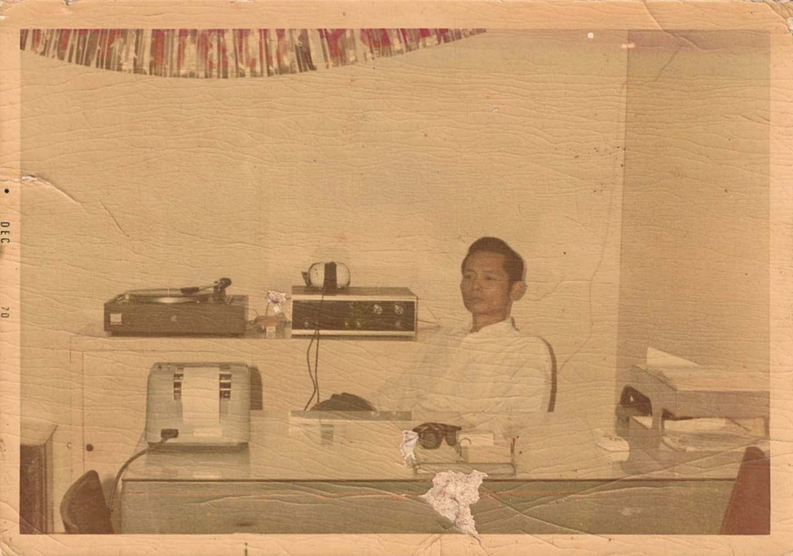

Posts
I <3 Computers

Lolo in His Accounting Office
As part of the generation of the digital natives, it's not peculiar to be falling in love with the intricacies of computing. You wouldn't expect older generations to be the one to ignite your passion for computers, right? In my case, it's a bit different...
My Lolo, back in Pasig, was the one to introduce me to computers. I wouldn't be in this field without his influence. As someone born in the 1930s, you wouldn't expect him to know alot about computers, but he was the one to introduce us to personal computers. Before I was born, he ran an internet café, at the back of his house. Unfortunately, I didn't get to see that shop, but the first memory I remember of computers was him playing Solitaire and Tetris on his old personal computer, and that's how my love for computers began.
The catalyst for my love (addiction) for computers and video games was when my brother and I got introduced to Y8.com by our friends in Pampanga. I remember waking up early every Saturday morning just so I can hog the computer for myself. When I reached fifth grade, I would sneak out of the house just so I can play League of Legends at the local computer shop, since my mother is convinced that playing League of Legends is the equivalent of worshipping the devil, hence the ban on downloading it on our family computer :(.
Because of my love for video games, I became curious as to how video games were made, and that's when I encountered CodeAvengers, the online service that offers courses on how to create games using various programming languages. I was hooked. It was very rewarding to see results whenever I press the run button. Eventually, I stumbled across CodeCademy, another online service that offers computer science and web development courses, and that's how I got here.
< Previous
I plan for this to be my portfolio in the future, so expect more posts and essays in the future :D